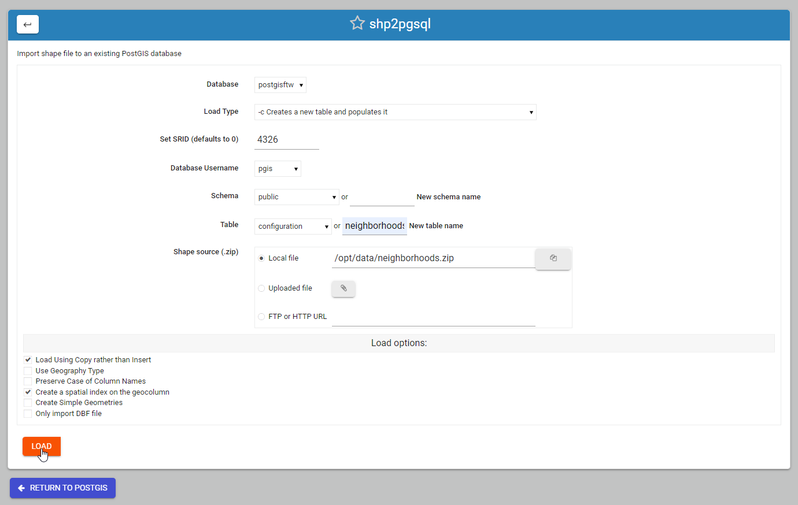

shp2pgsql¶
Table of Contents
Shape Loader Tool¶
An included shp2pgsql tool is available if you installed Webmin.
There are 2 options for loading ESRI Shape files:
- Load using the Shape File Loader.
- Load using command line.
Load via Shape File Loader¶
Click the Shape File Loader tab as shown below


The load options are displayed below.

Also select if load will be into a new Schema and, in the case of New Table creation, the table name to be created.
Load Options
Database: select the database you wish to load the shape file to.
Load Type: Create, Drop, Append, or Prepare
Set SRID: Defaults to 0 if not set
Database Username: Select the user who will own the data
Schema: Select an existing schema or create a new schema.
Table: Select an existing table or create new one
Shape File Source: Local, Upload, or FTP/HTTP
Load via Comamnd Line¶
Usage
shp2pgsql usage can be found using the ‘shp2pgsl’ command.
root@postgis:~# shp2pgsql
RELEASE: 2.3.2 (r15302)
USAGE: shp2pgsql [<options>] <shapefile> [[<schema>.]<table>]
OPTIONS:
-s [<from>:]<srid> Set the SRID field. Defaults to 0.
Optionally reprojects from given SRID (cannot be used with -D).
(-d|a|c|p) These are mutually exclusive options:
-d Drops the table, then recreates it and populates
it with current shape file data.
-a Appends shape file into current table, must be
exactly the same table schema.
-c Creates a new table and populates it, this is the
default if you do not specify any options.
-p Prepare mode, only creates the table.
-g <geocolumn> Specify the name of the geometry/geography column
(mostly useful in append mode).
-D Use postgresql dump format (defaults to SQL insert statements).
-e Execute each statement individually, do not use a transaction.
Not compatible with -D.
-G Use geography type (requires lon/lat data or -s to reproject).
-k Keep postgresql identifiers case.
-i Use int4 type for all integer dbf fields.
-I Create a spatial index on the geocolumn.
-m <filename> Specify a file containing a set of mappings of (long) column
names to 10 character DBF column names. The content of the file is one or
more lines of two names separated by white space and no trailing or
leading space. For example:
COLUMNNAME DBFFIELD1
AVERYLONGCOLUMNNAME DBFFIELD2
-S Generate simple geometries instead of MULTI geometries.
-t <dimensionality> Force geometry to be one of '2D', '3DZ', '3DM', or '4D'
-w Output WKT instead of WKB. Note that this can result in
coordinate drift.
-W <encoding> Specify the character encoding of Shape's
attribute column. (default: "UTF-8")
-N <policy> NULL geometries handling policy (insert*,skip,abort).
-n Only import DBF file.
-T <tablespace> Specify the tablespace for the new table.
Note that indexes will still use the default tablespace unless the
-X flag is also used.
-X <tablespace> Specify the tablespace for the table's indexes.
This applies to the primary key, and the spatial index if
the -I flag is used.
-? Display this help screen.
An argument of `--' disables further option processing.
(useful for unusual file names starting with '-')
Tutorial: Load shp Files¶
GeoSuite comes with 3 shp files, park.zip, waterways.zip, and neighborhoods.zip.
We’ll load the neighborhoods shp file below. The proceedure is the same for all three files.
1. Go to PostGIS > shp2pgsql

As shown below -
2. Select postgisftw as the target database
3. Leave load type as default (Create new table)
4. IMPORTANT: Set the SRID to 4326. pg_tileserv and pg_featursrv require a declared SRID.
5. Set database user as ‘pgis’
6. For table name, enter neighborhoods

7. For shp source file, select “local file” and click the file explorer button. Navigate to /opt/data and select the neighborhoods.zip file.

8. Accept all othe configuration defaults and click the Load button

When file has been loaded, output will be displayed as below.
The output also displays the command line used to load the data:

Troubleshooting¶
If the above commands produce ‘shp2pgsql command not found’, do the following:
On Ubuntu:
apt install postgis
On CentOS
yum install postgis3_utils
Documentation¶
Below are resources to get started with ogr2ogr and gdal_translate: